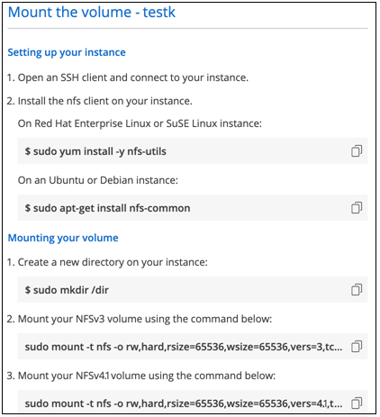

문서 변경 요청
문서 변경 요청 이 페이지 편집
이 페이지 편집 기여하는 방법 자세히 알아보기
기여하는 방법 자세히 알아보기Cloud Volumes Service for AWS 관리
기여자
Cloud Manager를 사용하면 을 기반으로 클라우드 볼륨을 생성할 수 있습니다 "AWS 환경을 위한 Cloud Volumes Service" 구독. Cloud Volumes Service 인터페이스에서 이미 생성한 클라우드 볼륨을 검색하여 작업 환경에 추가할 수도 있습니다.

|
을(를) 시작합니다 "ONTAP용 Amazon FSx"Cloud Manager에서 더 이상 AWS용 CVS 작업 환경을 새로 생성할 수 없습니다. 그러나 이전에 AWS용 CVS 작업 환경을 Cloud Manager에 추가했다면, 계속해서 볼륨을 생성하고 관리할 수 있습니다. |
클라우드 볼륨 생성
Cloud Volumes Service 작업 환경에 볼륨이 이미 있는 구성의 경우 다음 단계를 사용하여 새 볼륨을 추가할 수 있습니다.
볼륨이 없는 구성의 경우 Cloud Volumes Service for AWS 구독을 설정한 후 Cloud Manager에서 직접 첫 번째 볼륨을 생성할 수 있습니다. 이전에는 Cloud Volumes Service 사용자 인터페이스에서 첫 번째 볼륨을 직접 생성해야 했습니다.
-
AWS에서 SMB를 사용하려면 DNS와 Active Directory를 설정해야 합니다.
-
SMB 볼륨을 생성할 계획이라면 연결할 수 있는 Windows Active Directory 서버가 있어야 합니다. 볼륨을 생성할 때 이 정보를 입력합니다. 또한 관리자 사용자가 지정된 OU(조직 단위) 경로에 컴퓨터 계정을 만들 수 있는지 확인합니다.
-
새 지역/작업 환경에서 첫 번째 볼륨을 생성할 때 다음 정보가 필요합니다.
-
AWS 계정 ID: 대시가 없는 12자리 아마존 계정 식별자입니다. 계정 ID를 찾으려면 다음을 참조하십시오 "AWS 주제".
-
CIDR(Classless Inter-Domain Routing) 블록: 사용되지 않는 IPv4 CIDR 블록. 네트워크 접두사는 /16 및 /28 사이의 범위여야 하며, 개인 네트워크용으로 예약된 범위(RFC 1918)에도 속해야 합니다. VPC CIDR 할당과 중복되는 네트워크를 선택하지 마십시오.
-
-
AWS용 CVS 작업 환경을 선택하고 * 새 볼륨 추가 * 를 클릭합니다.
-
해당 지역의 작업 환경에 첫 번째 볼륨을 추가하는 경우 AWS 네트워킹 정보를 추가해야 합니다.
-
해당 지역의 IPv4 범위(CIDR)를 입력합니다.
-
12자리 AWS 계정 ID(대시 없음)를 입력하여 Cloud Volumes 계정을 AWS 계정에 연결합니다.
-
계속 * 을 클릭합니다.

-
-
가상 인터페이스 승인 페이지에서는 볼륨을 추가한 후에 해당 단계를 완료할 준비가 되도록 수행해야 하는 몇 가지 단계를 설명합니다. 계속 * 을 다시 클릭하면 됩니다.
-
세부 정보 및 태그 페이지에서 볼륨에 대한 세부 정보를 입력합니다.
-
볼륨의 이름을 입력합니다.
-
100GiB ~ 90GiB 범위(88TiB에 해당) 내의 크기를 지정합니다.
-
Standard, Premium 또는 Extreme 서비스 레벨을 지정합니다.
-
원하는 경우 볼륨을 분류할 태그 이름을 하나 이상 입력합니다.
-
계속 * 을 클릭합니다.

-
-
프로토콜 페이지에서 NFS, SMB 또는 이중 프로토콜 을 선택한 다음 세부 정보를 정의합니다. NFS 및 SMB에 필요한 항목은 아래 별도의 섹션에 나와 있습니다.
-
볼륨 경로 필드에서 볼륨을 마운트할 때 표시할 볼륨 내보내기의 이름을 지정합니다.
-
이중 프로토콜을 선택한 경우 NTFS 또는 UNIX를 선택하여 보안 스타일을 선택할 수 있습니다. 보안 스타일은 사용된 파일 권한 유형과 사용 권한을 수정하는 방법에 영향을 줍니다.
-
UNIX는 NFSv3 모드 비트를 사용하며, NFS 클라이언트만 권한을 수정할 수 있습니다.
-
NTFS는 NTFS ACL을 사용하며, SMB 클라이언트만 권한을 수정할 수 있습니다.
-
-
NFS의 경우:
-
NFS 버전 필드에서 사용자의 요구사항에 따라 NFSv3, NFSv4.1 또는 둘 다를 선택합니다.
-
선택적으로, 볼륨에 액세스할 수 있는 클라이언트를 식별하기 위해 엑스포트 정책을 생성할 수 있습니다. 다음을 지정합니다.
-
IP 주소 또는 CIDR(Classless Inter-Domain Routing)을 사용하여 허용된 클라이언트
-
읽기 및 쓰기 또는 읽기 전용으로 액세스 권한.
-
사용자에게 사용되는 액세스 프로토콜(또는 볼륨에서 NFSv3과 NFSv4.1 액세스가 모두 허용되는 경우 프로토콜)입니다.
-
추가 엑스포트 정책 규칙을 정의하려면 * + 내보내기 정책 규칙 추가 * 를 클릭합니다.
다음 이미지는 NFS 프로토콜에 대해 작성된 볼륨 페이지를 보여줍니다.
-

-
-
SMB의 경우:
-
SMB 프로토콜 암호화 확인란을 선택하여 SMB 세션 암호화를 활성화할 수 있습니다.
-
Active Directory 섹션의 필드를 완료하여 볼륨을 기존 Windows Active Directory 서버와 통합할 수 있습니다.
필드에 입력합니다 설명 DNS 기본 IP 주소입니다
SMB 서버의 이름 확인을 제공하는 DNS 서버의 IP 주소입니다. 여러 서버를 참조할 때 쉼표를 사용하여 IP 주소를 구분합니다(예: 172.31.25.223, 172.31.2.74).
연결할 Active Directory 도메인입니다
SMB 서버를 연결할 AD(Active Directory) 도메인의 FQDN입니다. AWS Managed Microsoft AD를 사용하는 경우 "Directory DNS name(디렉터리 DNS 이름)" 필드의 값을 사용합니다.
SMB 서버 NetBIOS 이름입니다
생성할 SMB 서버의 NetBIOS 이름입니다.
도메인에 가입하도록 승인된 자격 증명입니다
AD 도메인 내의 지정된 OU(조직 구성 단위)에 컴퓨터를 추가할 수 있는 충분한 권한이 있는 Windows 계정의 이름 및 암호입니다.
조직 구성 단위
SMB 서버와 연결할 AD 도메인 내의 조직 단위입니다. 기본값은 CN=사용자 고유의 Windows Active Directory 서버에 연결하는 컴퓨터입니다. AWS 관리 Microsoft AD를 Cloud Volumes Service의 AD 서버로 구성하는 경우 이 필드에 * OU=Computers, OU=Corp * 를 입력해야 합니다.
다음 이미지는 SMB 프로토콜에 대해 작성된 볼륨 페이지를 보여줍니다.


AWS 보안 그룹 설정에 대한 지침에 따라 클라우드 볼륨이 Windows Active Directory 서버와 올바르게 통합되도록 해야 합니다. 을 참조하십시오 "Windows AD 서버에 대한 AWS 보안 그룹 설정" 를 참조하십시오. -
-
스냅샷의 볼륨 페이지에서 기존 볼륨의 스냅샷을 기반으로 이 볼륨을 생성하려면 스냅샷 이름 드롭다운 목록에서 스냅샷을 선택합니다.
-
스냅샷 정책 페이지에서 Cloud Volumes Service를 활성화하여 일정에 따라 볼륨의 스냅샷 복사본을 생성할 수 있습니다. 지금 이 작업을 수행하거나 나중에 볼륨을 편집하여 스냅샷 정책을 정의할 수 있습니다.
을 참조하십시오 "스냅샷 정책을 생성하는 중입니다" 스냅샷 기능에 대한 자세한 내용은 를 참조하십시오.
-
볼륨 추가 * 를 클릭합니다.
새 볼륨이 작업 환경에 추가됩니다.
이 AWS 구독에서 생성된 첫 번째 볼륨인 경우 AWS 관리 콘솔을 실행하여 이 AWS 지역에서 사용되는 두 개의 가상 인터페이스를 수락해야 모든 클라우드 볼륨을 연결할 수 있습니다. 를 참조하십시오 "NetApp Cloud Volumes Service for AWS 계정 설정 가이드 를 참조하십시오" 를 참조하십시오.
볼륨 추가 * 버튼을 클릭한 후 10분 이내에 인터페이스를 수락해야 합니다. 그렇지 않을 경우 시스템이 시간 초과될 수 있습니다. 이 경우, AWS 고객 ID와 NetApp 일련 번호를 사용하여 cvs-support@netapp.com 으로 이메일을 보내십시오. 지원 부서에서 문제를 해결하고 온보딩 프로세스를 다시 시작할 수 있습니다.
그런 다음 로 진행합니다 "클라우드 볼륨을 마운트합니다".
클라우드 볼륨을 마운트합니다
클라우드 볼륨을 AWS 인스턴스에 마운트할 수 있습니다. 클라우드 볼륨은 현재 Linux 및 UNIX 클라이언트용 NFSv3 및 NFSv4.1과 Windows 클라이언트용 SMB 3.0 및 3.1.1을 지원합니다.
-
참고: * 고객이 지원하는 강조 표시된 프로토콜/언어를 사용하십시오.
-
작업 환경을 엽니다.
-
볼륨 위로 마우스를 이동하고 * 볼륨 마운트 * 를 클릭합니다.
NFS 및 SMB 볼륨은 해당 프로토콜의 마운트 지침을 표시합니다. 이중 프로토콜 볼륨은 두 가지 명령을 모두 제공합니다.
-
명령 위로 마우스를 가져가 클립보드에 복사하여 이 프로세스를 보다 쉽게 수행할 수 있습니다. 명령 끝에 대상 디렉토리/마운트 지점을 추가하기만 하면 됩니다.
-
NFS 예: *

'rsize' 및 'wsize' 옵션에 의해 정의된 최대 I/O 크기는 1048576이지만 대부분의 사용 사례에서 65536이 권장되는 기본값입니다.
RS=<NFS_VERSION>' 옵션으로 버전을 지정하지 않으면 Linux 클라이언트는 기본적으로 NFSv4.1로 설정됩니다.
-
SMB 예: *

-
-
SSH 또는 RDP 클라이언트를 사용하여 Amazon Elastic Compute Cloud(EC2) 인스턴스에 연결한 다음 해당 인스턴스에 대한 마운트 지침을 따릅니다.
마운트 지침의 단계를 완료한 후 클라우드 볼륨을 AWS 인스턴스에 마운트했습니다.
기존 볼륨 관리
스토리지 요구사항의 변화에 따라 기존 볼륨을 관리할 수 있습니다. 볼륨을 보고, 편집하고, 복원하고, 삭제할 수 있습니다.
-
작업 환경을 엽니다.
-
볼륨 위로 마우스를 이동합니다.

-
볼륨 관리:
작업 조치 볼륨에 대한 정보를 봅니다
볼륨을 선택한 다음 * 정보 * 를 클릭합니다.
볼륨 편집(스냅샷 정책 포함)
-
볼륨을 선택한 다음 * 편집 * 을 클릭합니다.
-
볼륨의 속성을 수정한 다음 * 업데이트 * 를 클릭합니다.
NFS 또는 SMB 마운트 명령을 가져옵니다
-
볼륨을 선택한 다음 * 볼륨 마운트 * 를 클릭합니다.
-
복사 * 를 클릭하여 명령을 복사합니다.
필요 시 스냅샷 복사본을 생성합니다
-
볼륨을 선택한 다음 * 스냅샷 복사본 생성 * 을 클릭합니다.
-
필요한 경우 스냅샷 이름을 변경한 다음 * 생성 * 을 클릭합니다.
볼륨을 스냅샷 복사본의 내용으로 교체합니다
-
볼륨을 선택한 다음 * Revert volume to Snapshot * 을 클릭합니다.
-
스냅샷 복사본을 선택하고 * 되돌리기 * 를 클릭합니다.
스냅샷 복사본을 삭제합니다
-
볼륨을 선택한 다음 * 스냅샷 복사본 삭제 * 를 클릭합니다.
-
삭제할 스냅샷 복사본을 선택하고 * 삭제 * 를 클릭합니다.
-
확인하려면 * 삭제 * 를 다시 클릭합니다.
볼륨을 삭제합니다
-
모든 클라이언트에서 볼륨을 마운트 해제합니다.
-
Linux 클라이언트의 경우 'umount' 명령을 사용합니다.
-
Windows 클라이언트에서 * 네트워크 드라이브 연결 해제 * 를 클릭합니다.
-
-
볼륨을 선택한 다음 * 삭제 * 를 클릭합니다.
-
확인하려면 * 삭제 * 를 다시 클릭합니다.
-
Cloud Manager에서 Cloud Volumes Service를 제거합니다
Cloud Volumes Service for AWS 가입과 Cloud Manager에서 모든 기존 볼륨을 제거할 수 있습니다. 볼륨은 삭제되지 않으며 Cloud Manager 인터페이스에서 방금 제거됩니다.
-
작업 환경을 엽니다.

-
를 클릭합니다
 단추를 클릭하고 <Cloud Volumes Service 제거>*를 클릭합니다.
단추를 클릭하고 <Cloud Volumes Service 제거>*를 클릭합니다. -
확인 대화 상자에서 * 제거 * 를 클릭합니다.
Active Directory 구성을 관리합니다
DNS 서버 또는 Active Directory 도메인을 변경하는 경우 Cloud Volumes Services에서 SMB 서버를 수정하여 스토리지에서 계속 클라이언트에 스토리지를 제공할 수 있도록 해야 합니다.
Active Directory가 더 이상 필요하지 않은 경우 Active Directory에 대한 링크를 삭제할 수도 있습니다.
-
작업 환경을 엽니다.
-
를 클릭합니다
버튼을 클릭하고 * Active Directory 관리 * 를 클릭합니다. -
Active Directory가 구성되어 있지 않은 경우 지금 추가할 수 있습니다. 설정이 구성되어 있으면 를 사용하여 설정을 수정하거나 삭제할 수 있습니다
단추를 클릭합니다. -
가입하려는 Active Directory의 설정을 지정합니다.
필드에 입력합니다 설명 DNS 기본 IP 주소입니다
SMB 서버의 이름 확인을 제공하는 DNS 서버의 IP 주소입니다. 여러 서버를 참조할 때 쉼표를 사용하여 IP 주소를 구분합니다(예: 172.31.25.223, 172.31.2.74).
연결할 Active Directory 도메인입니다
SMB 서버를 연결할 AD(Active Directory) 도메인의 FQDN입니다. AWS Managed Microsoft AD를 사용하는 경우 "Directory DNS name(디렉터리 DNS 이름)" 필드의 값을 사용합니다.
SMB 서버 NetBIOS 이름입니다
생성할 SMB 서버의 NetBIOS 이름입니다.
도메인에 가입하도록 승인된 자격 증명입니다
AD 도메인 내의 지정된 OU(조직 구성 단위)에 컴퓨터를 추가할 수 있는 충분한 권한이 있는 Windows 계정의 이름 및 암호입니다.
조직 구성 단위
SMB 서버와 연결할 AD 도메인 내의 조직 단위입니다. 기본값은 CN=사용자 고유의 Windows Active Directory 서버에 연결하는 컴퓨터입니다. AWS 관리 Microsoft AD를 Cloud Volumes Service의 AD 서버로 구성하는 경우 이 필드에 * OU=Computers, OU=Corp * 를 입력해야 합니다.
-
설정을 저장하려면 * 저장 * 을 클릭합니다.